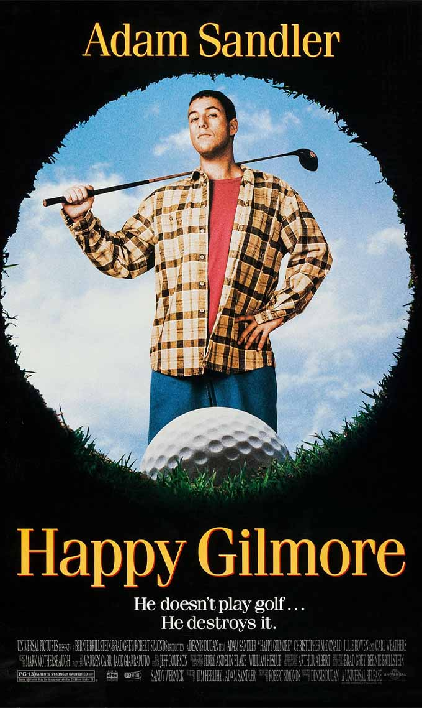
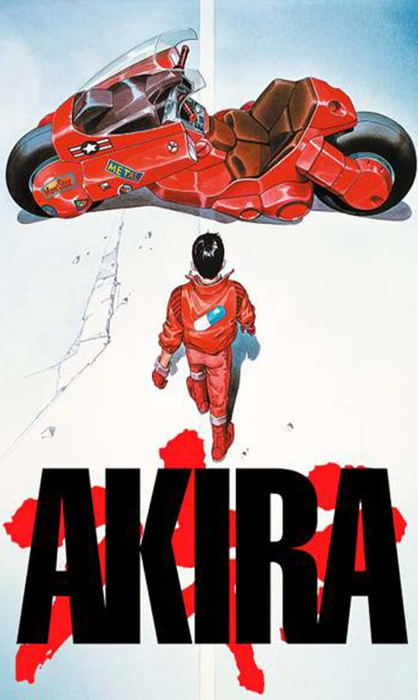
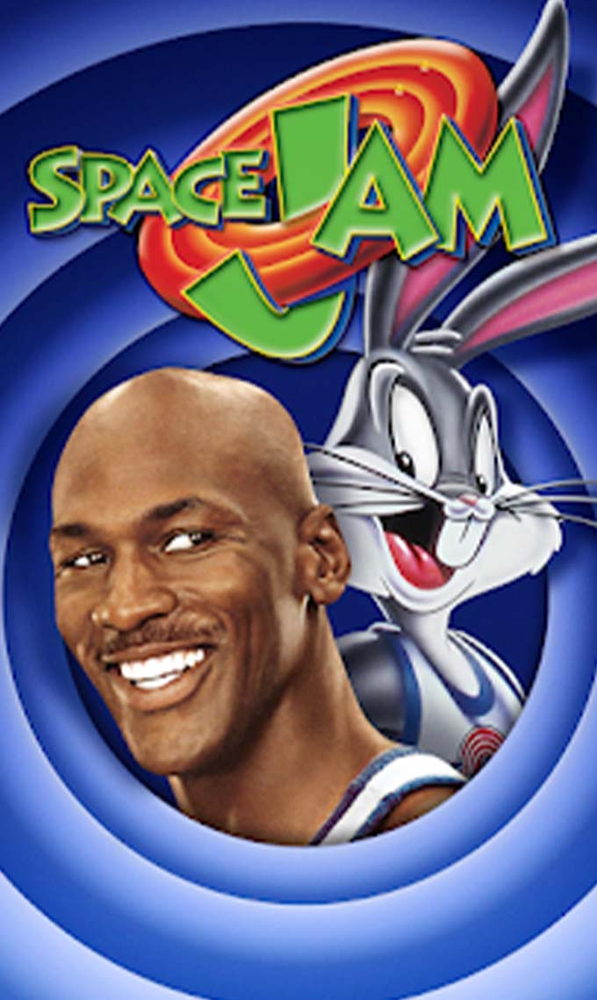
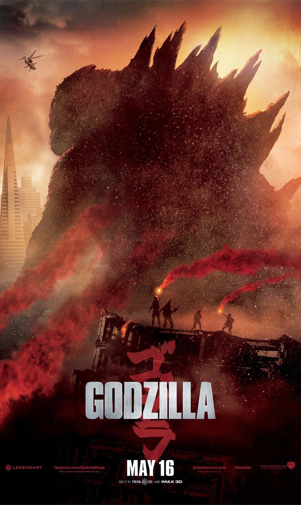
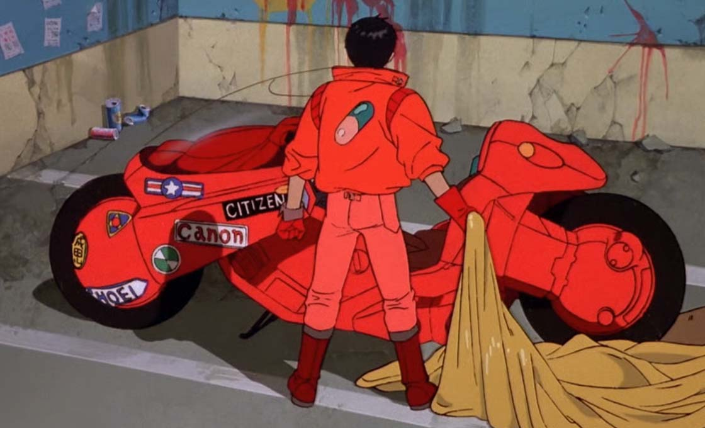
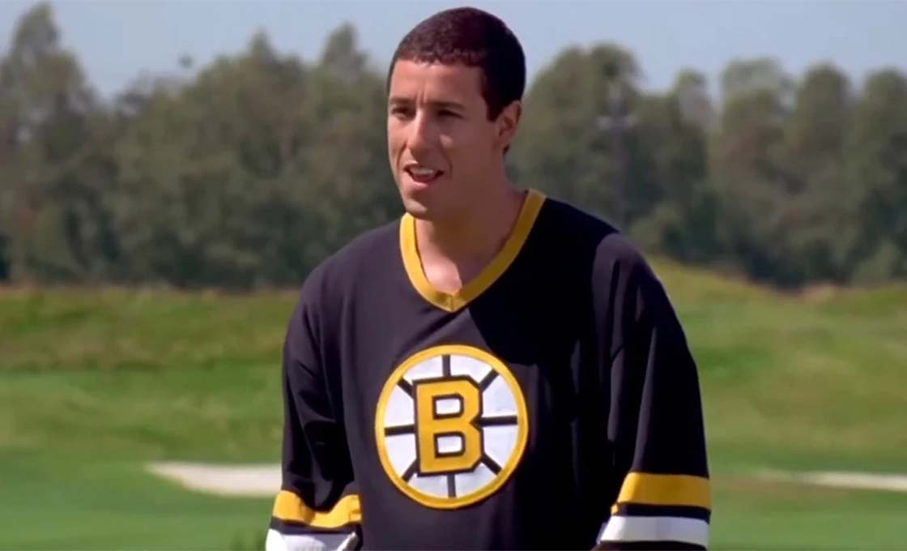
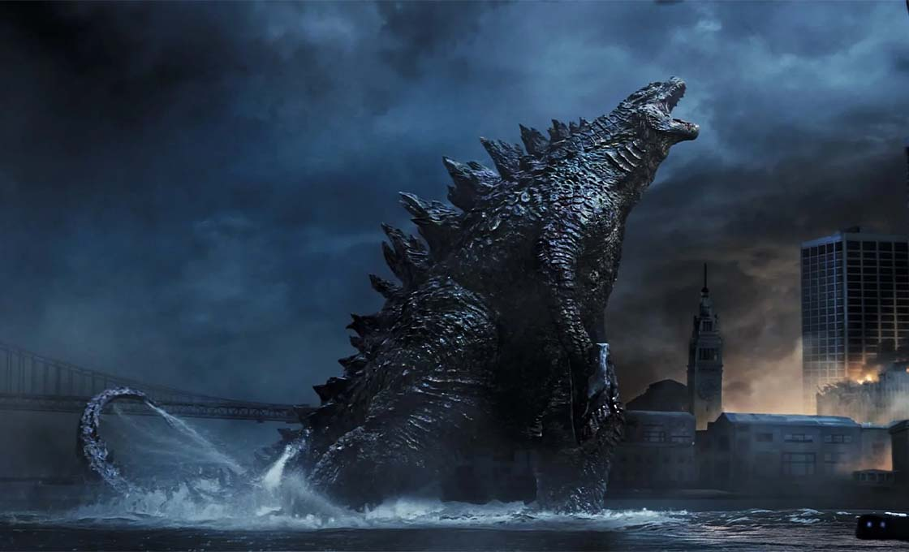
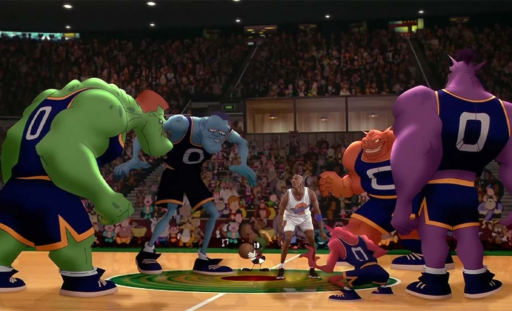

Run Time: 124 minutes
Genre: Cyberpunk
Rating:
In 1988 the Japanese government drops an atomic bomb on Tokyo
after ESP experiments on children go awry. In 2019, 31 years
after the nuking of the city, Kaneda, a bike gang leader,
tries to save his friend Tetsuo from a secret government
project. He battles anti-government activists, greedy politicians,
irresponsible scientists and a powerful military leader until
Tetsuo's supernatural powers suddenly manifest. A final battle
is fought in Tokyo Olympiad exposing the experiment's secrets.

Run Time: 92 minutes
Genre: Comedy
Rating:
All Happy Gilmore has ever wanted is to be a professional
hockey player. But he soon discovers he may actually have
a talent for playing an entirely different sport: golf.
When his grandmother (Frances Bay) learns she is
about to lose her home, Happy joins a golf
tournament to try and win enough money to buy it for her.
With his powerful driving skills and attitude,
Happy becomes an unlikely golf hero -- much to the chagrin of
the well-mannered golf professionals.

Run Time:
123 minutes
Genre:Science Fiction
Rating:
Ford Brody , a Navy bomb expert, has just reunited
with his family in San Francisco when he is forced
to go to Japan to help his estranged father, Joe Soon,
both men are swept up in an escalating crisis when
Godzilla, King of the Monsters, arises from the sea
to combat malevolent adversaries that threaten the
survival of humanity. The creatures leave colossal
destruction in their wake, as they make their way toward
their final battleground: San Francisco.

Run Time:
87 minutes
Genre:
Fantasy
Rating:
Swackhammer an evil alien theme park owner, needs a
new attraction at Moron Mountain. When his gang, the
Nerdlucks, heads to Earth to kidnap Bugs Bunnyand the
Looney Tunes, Bugs challenges them to a basketball
game to determine their fate. The aliens agree, but
they steal the powers of NBA basketball players,
including Larry Bird and Charles Barkley so Bugs
gets some help from superstar Michael Jordan